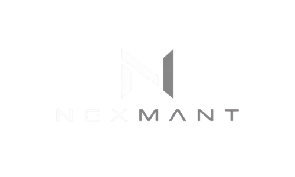
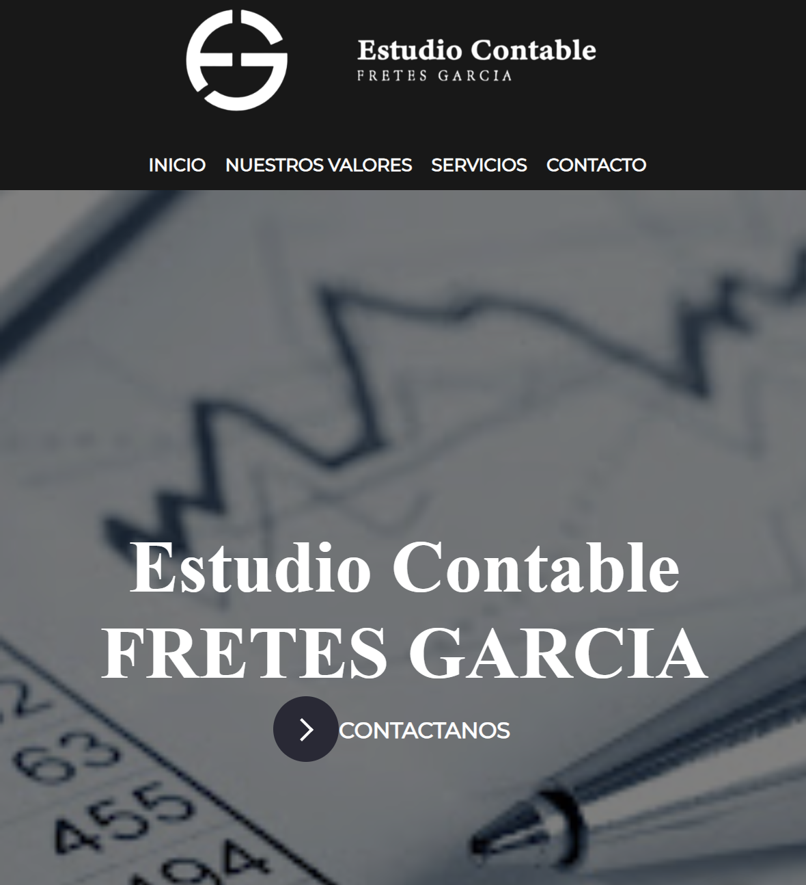
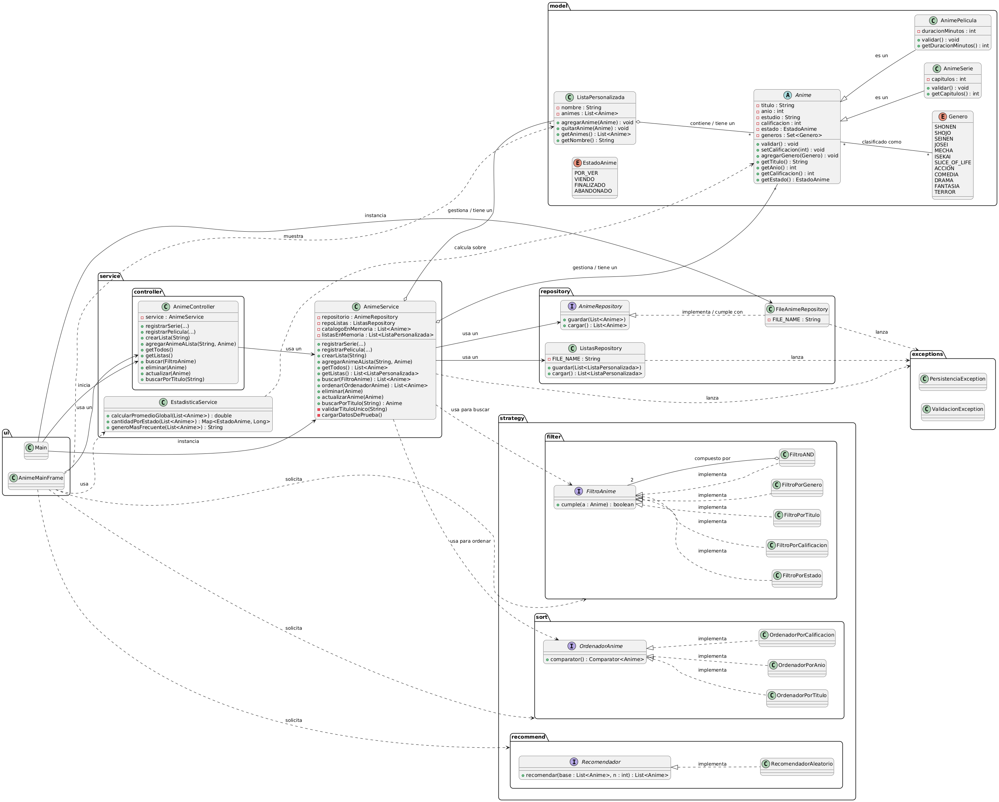

Proyectos

Nexmant
Proyecto Freelance. Desarrollo integral de sitio web responsivo y moderno. Diseño centrado en la experiencia de usuario y optimización de interfaz.

Estudio Fretes Garcia
Proyecto Freelance (Cliente Real). Sitio profesional para estudio contable. Interfaz moderna que refleja la identidad corporativa y optimiza la experiencia de usuario.

Juego Wordle (Python)
Implementación del clásico juego de adivinanzas con lógica de validación, manejo de errores y retroalimentación visual.

Sistema de Anime (TP Final POO)
Trabajo final de la materia Paradigmas Orientados a Objetos. Modelado de dominio complejo aplicando herencia, polimorfismo y buenas prácticas.
Sistema de Gestión de Asistencia
Desarrollé este sistema para mi trabajo actual. Armé una estructura de varias hojas conectadas a una tabla de configuración. Además, le integré alertas automáticas que detectan al instante cuando un alumno supera el límite de faltas.
Generador de Informes Académicos
Creé esta herramienta para optimizar los tiempos en mi entorno laboral. Me encargué de cruzar los datos de todas las materias para generar un boletín automático por cada alumno.
Registro y Trazabilidad de Sanciones
Diseñé este registro para llevar el seguimiento individual de incidencias. Además del panel de resumen global, le programé una vista dinámica de "Impresión" que genera automáticamente un documento formal.
Corte Criollo
Desarrollo de página web para barbería ficticia. Diseño e implementación de interfaz funcional, responsive y optimizada.